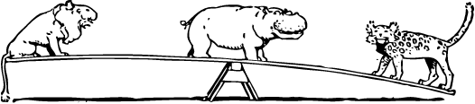
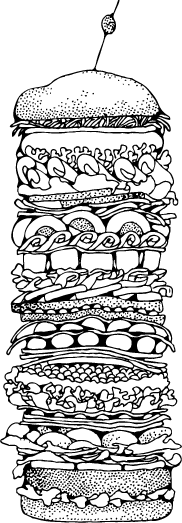

Довольно предвзятая история HTML5
Недавно я наткнулся на цитату разработчиков Mozilla о напряжённости, связанной с созданием стандартов:
Реализации и спецификации должны вместе следовать в изящном танце. Вы не хотите, чтобы реализация происходила до окончания работ над спецификацией, потому что люди начнут зависеть от деталей реализации и это станет сдерживать спецификацию. Однако вы также не желаете, чтобы спецификация была завершена раньше реализации, тогда авторы начнут экспериментировать с реализацией, когда вам нужна обратная связь. Существует неизбежная напряжённость, но мы просто должны колебаться в выборе до конца.
Держите эту цитату в глубине сознания и позвольте мне объяснить про становление HTML5.

MIME-типы
Эта книга об HTML5, а не о предыдущих версиях HTML и не о любой версии XHTML. Но чтобы понять историю HTML5 и мотивацию, стоящую за ним, вы должны в первую очередь понимать несколько технических моментов. В частности, MIME-типы.
Каждый раз, когда ваш браузер запрашивает страницу, веб-сервер посылает «заголовки» перед отправкой фактического кода страницы. Эти заголовки, как правило, невидимы, хотя есть инструменты веб-разработчика, которые делают их видимыми, если вам интересно. Заголовки важны, потому что они говорят вашему браузеру, как следует интерпретировать разметку страницы. Наиболее важный заголовок называется Content-Type и выглядит так:
Content-Type: text/html«text/html» называется «тип содержимого» или «MIME-тип» страницы. Единственное, что этот заголовок определяет — какой это в действительности ресурс и как его отображать. Изображения имеют свои собственные MIME-типы (image/jpeg для JPEG, image/png для PNG и др.). Файлы JavaScript имеют собственный MIME-тип. CSS имеет собственный MIME-тип. Все имеют собственный MIME-тип. Интернет работает на MIME-типах.
Конечно, в реальности всё намного сложнее. Первое поколение веб-серверов (я говорю про веб-сервера с 1993 года) не посылало заголовок Content-Type, потому что его ещё не было (он не был изобретён до 1994 года). Из соображений совместимости при возврате даты на 1993 год, некоторые популярные браузеры игнорируют заголовки Content-Type при определённых обстоятельствах (это называется «сниффинг контента»). Но, как правило, всё, что вы когда-нибудь просматривали в Сети — HTML-страницы, изображения, скрипты, видео, PDF и др. — отдавалось вам с определённым MIME-типом в заголовке Content-Type.
Пока не берите в голову. Мы ещё вернемся к этому.
Длинное отступление о том, как делаются стандарты
Почему мы используем элемент <img>? Это не тот вопрос, который вы слышите каждый день. Очевидно, кто-то его создал. Такие вещи не появляются просто ниоткуда. Каждый элемент, каждый атрибут, каждая технология HTML, которую вы когда-либо использовали — кто-то создал их, решил, как они должны работать и написал всё это. Эти люди не боги и они не безупречны. Они обычные люди. Умные люди, уверен. Но просто люди.
Одна из замечательных вещей в стандартах, разработанных «в открытую» это то, что вы можете вернуться назад во времени и ответить на разные вопросы. Обсуждения происходят через список рассылки, которые, как правило, архивируются и публично доступны. Так что я решил немного заняться «почтовой археологией», чтобы попытаться ответить на вопрос: «Почему мы используем элемент <img>?». Я должен вернуться назад до того, как появилась организация под названием Консорциум Всемирной паутины (World Wide Web Consortium, W3C). Я вернулся в ранние дни Интернета, когда количество веб-серверов можно было пересчитать по пальцам двух рук и может быть ещё парой пальцев ног.
Есть ряд опечаток в следующих цитатах. Я решил оставить их нетронутыми для исторической точности.
25 февраля 1993 года, Марк Андрессен пишет:
Я хотел бы предложить новый дополнительный тег HTML:
IMG
Обязательный аргумент SRC="url"
Это имя растрового или графического файла для браузера, который пытается тянуть их по сети и интерпретирует как изображение, должно быть включено в текст в момент создания тега.
Пример:
<IMG SRC="file://foobar.com/foo/bar/blargh.xbm">
(Здесь нет закрывающего тега, это всего лишь одиночный тег.)
Этот тег может быть вложен в ссылку, как и всё остальное; когда это произойдет, он станет иконкой, чувствительной к активации так же, как обычная текстовая ссылка.
Браузеры должны проявлять гибкость в отношении графических форматов, которые они поддерживают. Xbm и Xpm хорошо поддерживаются, к примеру. Если браузер не может интерпретировать данный формат, он может делать всё что хочет (X Mosaic по умолчанию выведет растровое изображение в качестве заполнителя).
Это потребует функциональности для X Mosaic, у нас это работало, и мы, по крайней мере использовали это внутренне. Я, конечно, открыт для предложений, как это должно обрабатываться в HTML; если у вас есть идея получше, чем сейчас предложенная, пожалуйста, дайте мне знать. Я понимаю, туманно написал о форматах изображений, но я не вижу альтернативы, чем просто сказать «пусть браузер делает что может» и ждать идеального решения (MIME, когда-нибудь, возможно).
Xbm и Xpm были популярными графическими форматами для Unix.
«Mosaic» был одним из самых ранних браузеров («X Mosaic» — это версия, которая работала на системах Unix). Марк Андрессен, когда написал это сообщение в начале 1993 года, ещё не основал компанию, которая сделала его знаменитым, Mosaic Communications Corporation, и не приступил к работе над флагманским продуктом компании «Mosaic Netscape» (вы, возможно, лучше знаете их по поздним именам «Netscape Corporation» и «Netscape Navigator»).
«MIME, когда-нибудь, возможно» это отсылка к обсуждению содержимого — особенность HTTP, в которой клиент (например, браузер) говорит серверу (например, веб-серверу), какие типы ресурсов он поддерживает (такие как image/jpeg), тогда сервер может вернуть что-то в предпочтительном для клиента формате. Исходный HTTP предложенный в 1991 году (та же версия была в феврале 1993 года) не позволял клиенту сообщить серверу, какие изображения он поддерживает. Таким образом, нарисовалась дилемма, с которой столкнулся Марк.
Несколько часов спустя Тони Джонсон ответил.
У меня есть нечто похожее в Midas 2.0 (используется здесь в SLAC и должен быть публичный релиз на этой неделе), за исключением того, что все имена разные и есть дополнительный аргумент NAME="name". Он почти в точности имеет ту же функциональность, что и предлагаемый вами тег IMG, например:
<ICON name="NoEntry" href="http://note/foo/bar/NoEntry.xbm">
Идея параметра name позволило браузеру устанавливать «встроенные» изображения. Если name совпадает со «встроенным» изображением, тогда оно используется вместо того, чтобы пойти и получить изображение. name также может выступать в качестве подсказки для «строчного режима» браузеров, как своего рода символ, чтобы поставить его на место изображения.
Я не очень заботился о параметрах или именах тегов, но было бы разумно, если бы использовали те же самые вещи. Я не очень забочусь о сокращениях, так что, почему не IMAGE= и не SOURCE=. Я предпочитаю всё же ICON, поскольку он проще, чем IMAGE и должен быть маленьким, но, возможно, ICON перегруженное слово?
Midas был другим ранним браузером, современником X Mosaic. Он был кроссплатформенный и запускался на Unix и VMS. SLAC относится к Стэнфордскому центру линейного ускорителя, сейчас Национальная ускорительная лаборатория SLAC, в котором запущен первый веб-сервер США (на самом деле первый веб-сервер за пределами Европы). Когда Тони написал это сообщение, SLAC был старейшим в WWW, у которого на веб-сервере размещалось пять страниц колоссальные 441 день.
Тони продолжал:
Пока мы в теме о новых тегах, у меня есть другой, несколько похожий тег, который я хотел бы поддержать в Midas 2.0. В принципе так:
<INCLUDE HREF="...">
Замысел в том, что второй документ вставляется в первый документ в месте, где этот тег встречается. В принципе, указанный документ может быть любым, но главная цель позволить изображениям (в данном случае произвольного размера) встраиваться в документы. Опять замысел такой, что с приходом HTTP2 форматы включаемых документов будут обсуждаться отдельно.
HTTP2 является отсылкой к базовому HTTP основанному в 1992 году. В указанный момент, в начале 1993 года, он был ещё в значительной степени не завершён. Проект известный как «HTTP2» развивался и был в конечном итоге стандартизирован как «HTTP 1.0» (хотя и не в течение трёх лет). HTTP 1.0 включает заголовки запросов для обсуждения содержимого, а ля «MIME, когда-нибудь, возможно».
Тони продолжал:
В качестве альтернативы я бы рассмотрел:
<A HREF="..." INCLUDE>Смотри фото</A>
Я не очень люблю добавлять больше функциональности тегу <A>, но идея здесь заключается в сохранении совместимости с браузерами, которые не поддерживают параметр INCLUDE. Предполагается, что браузеры, которые понимают INCLUDE, заменят текст ссылки (в данном случае «Смотри фото») с помощью включенного документа (рисунка), пока старые или тупые браузеры полностью игнорируют тег INCLUDE.
Это предложение не было реализовано, хотя идея предоставления текста, если изображение отсутствует, это важная техника доступности, которая отсутствовала в первоначальном предложении Марка об <IMG>. Много лет спустя, эта функция была закреплена за атрибутом <img alt>, который Netscape быстро разрушил, ошибочно рассматривая его в качестве подсказки.
Несколько часов спустя после отправки сообщения Тони, ответил Тим Бернерс-Ли.
Я думал, что иллюстрации будут представлены так:
<a name=fig1 href="fghjkdfghj" REL="EMBED, PRESENT">Иллюстрация </a>
где значения отношений обозначают
EMBED Вставить сюда при наличии
PRESENT Показать, когда исходный документ представленЗаметьте, что у вас могут быть различные комбинации и если браузер ни одно не поддерживает, он не ломается.
[Я] вижу использование этого в качестве способа для выбора иконки средствами вложенных ссылок. Хммм. Но мне не хотелось бы отдельный тег.
Это предложение не было реализовано, но атрибут rel по прежнему с нами.
Было бы хорошо, если бы был способ указать тип содержимого, например.
<IMG HREF="http://nsa.gov/pub/sounds/gorby.au" CONTENT-TYPE=audio/basic>
Но я полностью согласен жить с требованием указывать тип содержимого по расширению файла.
Это предложение не было реализовано, но Netscape позже добавил поддержку для встраивания мультимедийных объектов с элементом <embed>.
Хотя изображения находятся в верхней части моего списка желаний, посередине типов в WWW браузерах, я не думаю, что мы должны добавлять специальные хуки для медиа по одному за раз. Что случилось с энтузиазмом по использованию механизма MIME?
Это не замена предстоящего использования MIME в качестве механизма стандартного документа; это обеспечение необходимой и простой реализации функциональности, который требуется независимо от MIME.
Давайте временно забудем о MIME, если это эфемерная проблема. Моё возражение было к обсуждению «как мы будем поддерживать встроенные изображения», а не «как мы будем поддерживать встроенные изображения в разных медиа».
В противном случае кто-то через неделю предложит «давайте вставим новый тег <AUD SRC="file://foobar.com/foo/bar/blargh.snd">» для аудио.
Не должно быть больших расходов при переходе от чего-то обобщённого.
Оглядываясь назад, кажется беспокойства Джея были хорошо обоснованными. Потребовалось чуть больше недели, но в HTML5 наконец добавлены новые элементы <video> и <audio>.
Отвечая на исходное сообщение Джея, Дэйв Рэгетт сказал:
Точно! Я хочу рассмотреть весь диапазон возможных типов изображений наряду с обсуждением формата. Тим заметил про поддержку кликабельных областей внутри изображений, это тоже важно.
Позже в 1993 году, Дэйв Рэгетт предложил HTML+ как эволюцию стандарта HTML. Предложение не было реализовано и было заменено HTML 2.0. HTML 2.0 была «ретро-спекой», это означает, что формальные особенности в целом используются. «Эта спецификация объединяет, разъясняет и формализует набор функций, которые примерно соответствуют возможностям HTML в целом до июня 1994 года».
Дэйв написал позднее HTML 3.0, основанный на его раннем проекте HTML+. HTML 3.0 никогда не был реализован и был заменён HTML 3.2, другой «ретро-спекой»: «HTML 3.2 добавляет широко распространённые возможности, такие как таблицы, апплеты и обтекание картинок текстом, в то время обеспечивая полную обратную совместимость с существующим стандартом HTML 2.0».
Дэйв позже стал соавтором HTML 4.0, разработал HTML Tidy, помогал с XHTML, XForms, MathML и другими современными спецификациями W3C.
Возвращаясь к 1993 году, Марк ответил Дэйву:
В действительности, может быть нам стоит подумать о процедурном языке графики общего назначения, с которым мы можем вставлять произвольные гиперссылки приатаченные к иконкам, изображениям, тексту или др. Кто-нибудь ещё видел возможности Intermedia относительно этого?
Intermedia это гипертекстовый проект из Университета Брауна. Он был разработан в период с 1985 по 1991 год и запускался под U/AX, Unix-подобной операционной системы для ранних компьютеров Macintosh.
Идея «процедурного языка графики общего назначения» была в конечном итоге подхвачена. Современные браузеры поддерживают как SVG (декларативная разметка со встроенными скриптами), так и <canvas> (процедурный режим вывода графики), хотя последний начинал как проприетарное расширение, прежде чем стал «ретро-спекой» от WHATWG.
Посмотрите на другие системы, которые имеют эти (довольно ценные) понятия, Andrew и Slate. Andrew построен со _вставками_, каждая из них имеет несколько интересных типов, таких как текст, точечный рисунок, графика, анимация, сообщения, электронные таблицы и т. д. Понятие произвольное рекурсивное вложение присутствует, так что вставка любого рода может быть вложена в любой другой вид, который поддерживает вложения. Например, вставка может быть встроена в любом месте текста текстового виджета или в любой прямоугольной области виджета рисования или в любой ячейке электронной таблицы.
Andrew это отсылка к Andrew User Interface System (хотя в то время он был просто известен как Andrew Project).
Между тем, Томас Файн подал другую идею:
Вот моё мнение. Лучший способ сделать изображения в WWW это использование MIME. Я уверен, PostScript уже поддерживает подтипы в MIME, и он делает это очень красиво с совмещением текста и графики.
Но это не кликабельно, вы говорите? Да, вы правы. Я подозреваю, что ответ на это уже есть в Display PostScript. Даже если не добавлено в стандартный PostScript, это тривиально. Определите команду ссылке, которая задаёт URL и использует текущий путь как замкнутую область для кнопки. Поскольку PostScript хорошо имеет дело с путями, создание произвольной кнопки тривиально.
Display PostScript был экранной технологией рендеринга совместно разработанной Adobe и NeXT.
Это предложение не было реализовано, но идея, что лучший способ исправить HTML, это заменить его чем-то совсем другим, ещё всплывает время от времени.
Тим Бернерс-Ли, 2 марта 1993 года:
HTTP2 позволяет документу содержать любой тип, с которым пользователь сказал, что он может работать, а не только зарегистрированные MIME-типы. Так что можно экспериментировать. Да, я думаю, есть основания для PostScript-а с гипертекстом. Я не знаю, достаточно ли Display PostScript. Я знаю, Adobe пытается создать свой собственный PostScript-ориентированный «PDF», который будет иметь ссылки и считаться их проприетарным просмотрщиком.
Я думаю, что общий оверлейный язык для ссылок (на основе Hytime?) позволит гипертексту и графики/видео стандартам развиваться отдельно, что поможет обоим.
Пусть тег IMG включает INCLUDE и пусть он ссылается на произвольный тип документа. Или EMBED, если INCLUDE звучит как include из C++, чтобы люди могли обеспечить исходный код SGML для построчного разбора — не так, как было задумано.
HyTime была ранней гипертекстовой системой документа на основе SGML. Она маячила в начале обсуждения HTML, XML и позже.
Предложение Тима для тега <include> так и не было реализовано, хотя вы можете видеть его отголоски в элементах <object>, <embed> и <iframe>.
Наконец, 12 марта 1993 года, Марк Андрессен вновь затронул тему:
Вернёмся ко встроенным изображениям ещё раз — я близок к выпуску Mosaic 0.10, который поддерживает изображения GIF и XBM как уже упоминалось ранее...
Мы не готовы поддержать INCLUDE/EMBED в этой точке... Так что мы, вероятно, будем идти с <IMG SRC="url"> (не ICON, поскольку не все встроенные изображения могут обоснованно называться иконками). В настоящее время встроенные изображения не будут явно содержать content-type; в будущем мы планируем сделать поддержку этого (наряду с общей адаптацией MIME). На самом деле процедура чтения изображений, которую мы используем в настоящий момент, выясняет формат на лету, так что расширение файла не так и важно.
Непрерывная линия

Я чрезвычайно увлечён всеми аспектам этого почти 22-летнего разговора, что привёл к созданию элемента HTML, который использовался практически на каждой когда-либо опубликованной веб-странице. Примем во внимание:
- HTTP по-прежнему существует. HTTP успешно развивался с 0.9 в 1.0 и позже в 1.1. И ещё развивается.
- HTML по-прежнему существует. Это элементарный формат данных — он даже не поддерживает встроенные изображения! — успешно развивался в 2.0, 3.2, 4.0. HTML это непрерывная линия. Кривая, узловатая, путаная линия, будьте уверены. Было много «мёртвых ветвей» в дереве эволюции; мест, где стандартно мыслящие люди опередили самих себя (и превзошли авторов и исполнителей). Но тем не менее. Мы здесь, в 2015 году, а веб-страницы с 1990 года по-прежнему отображаются в современных браузерах. Я только что загрузил одну в браузер моего мобильника на новейшем Андроиде и мне даже не предложили «Пожалуйста, подождите, пока импортируется устаревший формат...».
- HTML всегда был разговором между разработчиками браузеров, авторами, зубрилами стандартов и другими людьми, которые просто пришли и хотят поговорить об угловых скобках. Большинство успешных версий HTML были «ретро-спеками», догоняющими мир и одновременно пытающими подтолкнуть его в правильном направлении. Любой, кто говорит вам, что HTML должен быть «чистым» (вероятно, игнорируя разработчиков браузеров или игнорируя авторов или и тех и других) просто заблуждается. HTML никогда не была чистым и все попытки очистить его были впечатляюще неудачными и могут только сравниться с попытки заменить его.
- Ни один из браузеров с 1993 года не существует в любом узнаваемом виде. Netscape Navigator был заброшен в 1998 году и переписан с нуля для создания Mozilla Suite, от которого затем отделился Firefox. Internet Explorer начинал как скромный «с чего начать» в «Microsoft Plus! для Windows 95», где он шёл в комплекте с некоторыми темами рабочего стола и игрой пинбол.
- Некоторые из операционных систем с 1993 года все ещё существуют, но ни одна из них не актуальная для современного Интернета. Большинство «опытных» людей выходят в Интернет на ПК под управлением Windows 2000 или более поздней версии, на Маках под управлением Mac OS X, ПК под управлением разновидностями Linux или портативных устройствах вроде iPhone. В 1993 году Windows была в версии 3.1 (и конкурирующей с OS/2), Маки управлялись System 7, Linux распространялся через Usenet.
- Некоторые из тех же людей по прежнему с нами и по-прежнему участвуют в том, что мы теперь просто называем «веб-стандарты». Вот уже почти 20 лет. И некоторые занимались предшественниками HTML, возвращаясь в 1980-е годы и раньше.
- Говоря о предшественниках... С текущей популярностью HTML легко забыть о форматах и системах, современников HTML, которые направляли этот проект. Andrew? Intermedia? HyTime? HyTime был не каким-то допотопным исследовательским проектом, а стандартом ISO. Он был одобрен для использования в военных целях. Это был Большой Бизнес. И вы можете прочитать об этом сами... на этой HTML-странице, в вашем браузере.
Но всё это не отвечает на исходный вопрос: почему мы используем элемент <img>? Почему не элемент <icon>? Или элемент <include>? Почему не гиперссылки с атрибутом include или некоторых комбинаций значений rel? Почему элемент <img>? Все очень просто, потому что Марк Андрессен реализовал его и реализованный код победил.
Это не означает, что все реализованные коды победили, в конце концов, Andrew и Intermedia и HyTime тоже были реализованы. Код необходим, но не достаточен для успеха. Я, конечно, не хочу сказать, что реализация кода раньше выпуска стандарта это лучшее решение. Элемент Марка <img> не определяет основные графические форматы; не устанавливает, как текст должен его обтекать; не поддерживает альтернативный текст или запасной контент для старых браузеров. И много лет спустя мы ещё боремся со сниффингом контента и это по-прежнему источник сумасшедшей уязвимости безопасности. И вы можете пройти все эти годы назад, через Великие войны браузеров, назад до 25 февраля 1993 года, когда Марк Андрессен небрежно заметил: «MIME, когда-нибудь, возможно», а затем реализовал свой код, несмотря ни на что.
Выиграли от этого те, кто воплотил.
Хронология развития HTML с 1997 по 2004
В декабре 1997 года World Wide Web Consortium (W3C) опубликовал HTML 4.0 и сразу же закрыл рабочую группу HTML. Менее чем через два месяца, отдельная рабочая группа W3C опубликовала XML 1.0. Всего лишь три месяца спустя, люди, которые управляют W3C, провели семинар под названием «Формируя будущее HTML», чтобы ответить на вопрос: «Отказался ли W3C от HTML?» Их ответ был таким:
В ходе обсуждения было решено, что дальнейшее расширение HTML 4.0 будет затруднено, так как преобразует 4.0 до XML-приложений. Предлагаемый путь освободит от этих ограничений, чтобы начать новую жизнь со следующего поколения HTML на основе набора XML-тегов.
W3C перезапустил рабочую группу HTML для создания этого «набора XML-тегов». Их первым шагом в декабре 1998 года был проект временной спецификации, которая просто переделывала HTML в XML без добавления каких-либо новых элементов и атрибутов. Эта спецификация позже стала известна как «XHTML 1.0». Она определила новый MIME-тип для документов XHTML — application/xhtml+xml. Однако для облегчения миграции существующих страниц HTML4 она также включила приложение C, которое «обобщает рекомендации по проектированию для авторов, желающих, чтобы их XHTML-документы отображались в существующих пользовательских агентах HTML». Приложение C говорит вам, что позволяет автору так называемых «XHTML» страниц, по-прежнему передавать их с MIME-типом text/html.
Следующей целью были веб-формы. В августе 1999 года та же рабочая группа HTML опубликовала первый проект XHTML Extended Forms. Она установила ожидания в первом абзаце:
После тщательного рассмотрения, рабочая группа HTML постановила, что цели следующего поколения форм не совпадают с сохранением обратной совместимости с браузерами, предназначенных для ранних версий HTML. Нашей целью является обеспечение чистоты новой модели форм (XHTML Extended Forms) на основе набора чётко определённых требований. Эти требования описаны в данном документе и основаны на опыте с широким спектром приложений форм.
Несколько месяцев спустя «XHTML Extended Forms» был переименован в «XForms» и переехал в собственную рабочую группу. Эта группа работала параллельно с рабочей группой HTML и, наконец, опубликовала первую редакцию XForms 1.0 в октябре 2003 года.
Между тем, полностью завершив переход на XML, рабочая группа HTML нацелилась на создание «следующего поколения HTML». В мае 2001 года она опубликовала первую редакцию XHTML 1.1, в которой добавились только несколько незначительных особенностей поверх XHTML 1.0, но и устранилась лазейка «Приложения C». Начиная с версии 1.1, все XHTML-документы должны передаваться с MIME-типом application/xhtml+xml.
Всё, что вы знаете об XHTML, неверно
Почему MIME-типы так важны? Почему я продолжаю к ним возвращаться? Три слова: драконовская обработка ошибок. Браузеры всегда были «снисходительны» с HTML. Если вы создали страницу HTML, но забыли тег </head>, браузер всё равно покажет страницу (некоторые теги неявно вызывают завершение <head> и начало <body>). Вы должны подразумевать иерархическую вложенность тегов — они закрываются в обратном порядке — но если вы создадите код вроде <b><i></b></i>, браузеры обработают его (так или иначе) и двинутся дальше без отображения сообщения об ошибке.

Как и следовало ожидать, тот факт, что «ломаная» разметка HTML работает в браузерах, позволило авторам создавать ломаные HTML-страницы. Много ломаных страниц. По некоторым оценкам, на сегодня более 99% HTML-страниц содержат, по меньшей мере, одну ошибку. Но так как эти ошибки не заставляют браузеры отображать видимые сообщения об ошибках, никто их никогда не исправляет.
W3C увидел в этом фундаментальную проблему и стал исправлять её. XML, опубликованный в 1997 году, вырвался из традиции прощать клиентов и постановил, что все программы, которые используют XML должны рассматривать так называемые «синтаксические» ошибки как фатальные. Эта концепция провала на первой же ошибке стала известна как «драконовская обработка ошибок», подобно греческому лидеру Драконту, кто учредил смертную казнь за малейшее нарушение его законов. Когда W3C переложил HTML на лексику XML, он распорядился, что все документы, передаваемые с новым MIME-типом application/xhtml+xml, будут зависеть от драконовской обработки ошибок. Если есть хотя бы одна ошибка синтаксиса на XHTML-странице — такая как забытый тег </head> или неверно вложенные начальные и конечные теги — у браузеров не будет иного выбора, кроме как остановить обработку и показать сообщение об ошибке конечному пользователю.
Эта идея не везде была популярна. С учётом нормы ошибок в 99% на существующих страницах, повсеместной вероятности отображения ошибок конечному пользователю и нехватки новых возможностей в XHTML 1.0 и 1.1, для оправдания затрат авторы в основном игнорируют application/xhtml+xml. Но это не означает, что они игнорировали XHTML в целом. О, определенно нет. Приложение С спецификации XHTML 1.0 дало авторам мира лазейку: «Сделайте что-то, что выглядит подобно синтаксису XHTML, но позвольте передавать это с MIME-типом text/html». И это именно то, что тысячи веб-разработчиков сделали: они «обновились» до синтаксиса XHTML, но продолжили передавать с MIME-типом text/html.
Даже сегодня миллионы веб-страниц претендуют на XHTML. Они начинаются с XHTML доктайпа в первой строке, используют имена тегов в нижнем регистре, кавычки вокруг атрибутов и добавляют слэш после пустых элементов вроде <br /> и <hr />. Но только небольшая часть из этих страниц передаётся с MIME типом application/xhtml+xml, что запускает драконовскую обработку ошибок XML. Любая страница переданная с MIME-типом text/html — независимо от доктайпа, синтаксиса или стиля кодирования — будет обрабатываться с помощью «снисходительного» анализатора HTML, молча игнорируя любые ошибки разметки и никогда не оповещая конечных пользователей (или кого-то ещё) даже если страница технически нарушена.
XHTML 1.0 включил эту лазейку, но XHTML 1.1 закрыл её, а незавершённый XHTML 2.0 продолжил традицию требующей драконовской обработки ошибок. Именно поэтому существуют миллиарды страниц, которые утверждают что они XHTML 1.0 и только горстка, которые утверждают что они XHTML 1.1 (или XHTML 2.0). Так вы действительно используете XHTML? Проверьте свой MIME-тип (на самом деле, если вы не знаете, какой MIME-тип используете, я почти гарантирую, что вы ещё используете text/html). Пока вы не передаёте ваши страницы с MIME-типом application/xhtml+xml, ваш, так называемый «XHTML», является XML только по названию.
Конкурентное видение
В июне 2004 года W3C провёл семинар по Веб-приложениям и составным документам. На этом семинаре присутствовали представители трёх браузеров, компании по веб-разработке и другие члены W3C. Группы заинтересованных сторон, включая Mozilla Foundation и Opera Software, рассказали о своих конкурентных видениях будущего веба: эволюция существующего стандарта HTML 4 включает новые возможности для современных разработчиков веб-приложений.
Следующие семь принципов отражают то, что мы считаем наиболее важными требованиями для этой работы.
- Обратная совместимость, понятный путь миграции
- Технологии веб-приложений должны базироваться на технологиях знакомым авторам и включающим HTML, CSS, DOM и JavaScript.
- Основные характеристики веб-приложения должны выполняться с использованием поведения, скриптов и таблиц стилей в IE6 сегодня, так что авторы имеют понятный путь миграции. Любое решение, которое не может быть использовано текущим пользовательским агентом без необходимых плагинов, вероятно не может быть успешным.
- Обработка ошибок правильности построения
- Обработка ошибок в веб-приложениях должна быть определена на уровне детализации, где пользовательские агенты не должны изобретать свои собственные механизмы обработки ошибок или реверсивное проектирование других пользовательских агентов.
- Пользователи не должны подвергаться авторским ошибкам
- Спецификации должны указывать точное поведение восстановления для каждого возможного сценария ошибки. Обработка ошибок должна по большей части определяться в терминах изящного устранения ошибок (как в CSS), а не как очевидный и катастрофический сбой (как в XML).
- Практическое использование
- Каждая функция, которая идёт в спецификации веб-приложения, должна быть обоснована практическим использованием. Обратное не всегда верно: каждый вариант использования не обязательно гарантирует новую функцию.
- Использовать аргументы предпочтительнее на базе реальных сайтов, где авторы ранее применяли плохое решение для обхода ограничения.
- Скрипты остаются
- Но их следует избегать там, где может быть использована удобная разметка.
- Скрипты должны быть нейтральными к устройствам и представлениям пока это возможно в конкретных устройствах (например, если они не включены в XBL).
- Следует избегать профиля конкретного устройства
- Авторы должны иметь возможность полагаться на те же функции, которые выполняются в настольных и мобильных версиях одного и того же пользовательского агента.
- Открытый процесс
- Веб принёс пользу, потому что разрабатывался в открытой среде. Веб-приложения будут ядром веба и их разработка должна пребывать в открытости. Списки рассылки, архивы и проекты спецификаций должны быть постоянно видимыми для общественности.
В неофициальном опросе участников семинара спросили: «Должен ли W3C развивать декларативное расширение HTML и CSS и обязательно дополнять DOM для решения требований среднего уровня веб-приложений, в отличие от сложных API полноценной ОС? (предложил Ян Хиксон, Opera Software)». Голосовали 11 за, 8 против. В своем резюме семинара, W3C написал: «В настоящее время W3C не намерен предоставлять любые ресурсы сторонней теме неофициального опроса: расширение HTML и CSS для веб-приложений, помимо технологий, разрабатываемых в соответствии с уставом текущей рабочей группы W3C».
Столкнувшись с этим решением, у людей, которые предложили развивать HTML и HTML-формы, было только два варианта: отказаться или продолжить свою работу за пределами W3C. Они выбрали последнее и зарегистрировали домен whatwg.org, так в июне 2004 года родилась WHAT Working Group.
WHAT Working Group?

Что ещё за, черт побери, WHAT Working Group? Я позволю объяснить это им самим:
Рабочая группа по разработке гипертекстовых приложений для веб (WHAT Working Group) это свободное, неофициальное и открытое сотрудничество производителей браузеров и заинтересованных сторон. Группа направлена на разработку спецификаций на основе HTML и связанных с ним технологий, чтобы облегчить развертывание совместимых веб-приложений с целью предоставления результатов по стандартам организации. Это предоставление затем будет основой работы по формальному расширению HTML по пути стандартов.
Создание этого форума следует из нескольких месяцев работы приватной переписки по спецификациям для каждых технологий. Основное внимание было уделено расширению форм HTML4 для поддержки функций по просьбе авторов, без нарушения обратной совместимости с существующим содержанием. Эта группа была создана, чтобы обеспечить будущее развитие этих спецификаций и будет полностью открыта через публичные архивы, доступный список рассылки.
Ключевая фраза здесь «без нарушения обратной совместимости». XHTML (исключая лазейку Приложения C) не является обратно совместимым с HTML. Он требует совершенно новый MIME-тип, который включает драконовскую обработку ошибок для любого контента передаваемого с этим MIME-типом. XForms не совместимы с формами HTML, потому что они могут использоваться только в документах, которые передаются с новым MIME-типом XHTML, это означает, что XForms также включают драконовскую обработку ошибок. Все дороги ведут в MIME.
Вместо выбрасывания более десяти лет вложений в HTML и создания 99% существующих веб-страниц непригодными, WHAT Working Group решила принять другой подход: документированы «прощающие» алгоритмы обработки ошибок, которые фактически используется браузерами. Браузеры всегда прощают ошибки HTML, но никто никогда не удосужился написать, как именно они это сделали. NCSA Mosaic имел свои собственные алгоритмы для работы с неправильными страницами, а Netscape пытался им соответствовать. Затем Internet Explorer пытался состязаться с Netscape. Затем Opera и Firefox пытались состязаться с Internet Explorer. Затем Safari пыталась состязаться с Firefox. И так далее, вплоть до наших дней. На этом пути разработчики сожгли тысячи и тысячи часов, пытаясь сделать свой продукт совместимым с конкурентами.
Если это звучит как безумное количество работы, то потому, что так и есть. Вернее, было. Потребовалось пять лет, но WHAT Working Group успешно документировала, как парсить HTML так, что это совместимо с существующим веб-контентом. В окончательном алгоритме нигде нет шага, который устанавливает, что HTML должен остановить обработку и показать сообщение об ошибке конечному пользователю.
Пока происходило реверсивное проектирование, WHAT Working Group тихо работала над некоторыми другими вещами. Одна из них была спецификация, первоначально дублирующая Web Forms 2.0 и добавляющая новые типы полей в HTML-формы (вы узнаете больше о веб-формах в сумасшедших формах). Другой проект спецификации называется «Web Applications 1.0», который включал много новых возможностей вроде холста для непосредственного рисования и встроенную поддержку аудио и видео без плагинов.
Назад в W3C

Два с половиной года W3C и WHAT Working Group в основном игнорировали друг друга. Хотя WHAT Working Group сосредоточила внимание на веб-формах и новых функциях HTML, рабочая группа W3C по HTML была занята XHTML версии 2.0. Но к октябрю 2006 года стало понятно, что WHAT Working Group подняла серьезный импульс, в то время как XHTML 2 по-прежнему томится в черновой форме и не был реализован в каком-либо серьёзном браузере. В октябре 2006 года Тим Бернерс-Ли, основатель W3C, объявил, что W3C будет работать вместе с WHAT Working Group над развитием HTML.
Некоторые вещи становятся понятны спустя годы. Необходимо развивать HTML постепенно. Попытка получить мир переходом к XML, включая кавычки вокруг значений атрибутов и слэш в пустых тегах и пространство имён, всё сразу не работает. Большая общественность сформированная вокруг HTML не двигалась, в основном, потому что браузеры не жаловались. Некоторые крупные сообщества сделали сдвиг и пользуются плодами синтаксически правильных систем, но не все. Важно поддерживать HTML постепенно, а также продолжить переход к синтаксически правильному миру и развитие больших усилий в этом мире.
Планируется организовать совершенно новую HTML-группу. В отличие от предыдущей группы, она будет делать постепенные улучшения в HTML, а также параллельно XHTML. Она будет иметь другое руководство и штат сотрудников. Он будет работать над HTML и XHTML вместе. Мы имеем сильную поддержку этой группы от многих людей, о которых мы говорили, в том числе разработчиков браузеров.
Также будет работа с формами. Это сложная область, поскольку существующие HTML-формы и XForms являются языком форм. HTML-формы повсеместно развернуты и существует много реализаций и пользователей XForms. Между тем, WebForms подчиняются разумному расширению в HTML-формы. Планируется образовать WebForms в расширение HTML-форм.
Одной из первых вещей недавно организованной W3C HTML Working Group было решение переименовать «Web Applications 1.0» в «HTML5». И отсюда мы погружаемся в HTML5.
Постскриптум
В октябре 2009 года W3C закрыл рабочую группу XHTML 2 и выпустил заявление, объясняющее это решение:
Когда W3C анонсировал рабочие группы HTML и XHTML 2 в марте 2007 года, мы показали, что будем продолжать мониторинг рынка для XHTML 2. W3C признаёт важность чёткого сигнала сообщества о будущем HTML.
Хотя мы признаём значение рабочей группы XHTML 2 на протяжении многих лет, после обсуждения с участниками руководство W3C решило устав рабочей группы, который истекает в конце 2009 года, не продлевать.
Выиграли от этого те, кто воплотил.
Дальнейшее чтение
- История Интернета — старый проект Яна Хиксона
- HTML/История — Майкл Смит, Анри Сивонен и другие
- Краткая история HTML — Скотт Рейнен

Все материалы сайта доступны по лицензии Creative Commons «Attribution-NonCommercial» («Атрибуция — Некоммерческое использование») 4.0 Всемирная, если не указано иное.